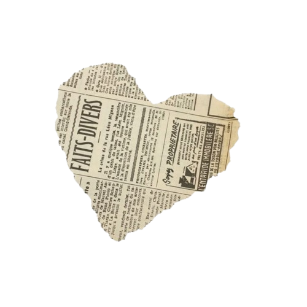

Reputation (stylized in all lowercase) is the sixth studio album by the American singer-songwriter Taylor Swift. It was released on November 10, 2017, through Big Machine Records. She conceived the album during a hiatus in 2016-2017, amidst the controversies that blemished her once-wholesome public image.
Swift employed an autobiographical songwriting approach on Reputation, which references her romantic relationships and celebrity disputes. Its songs form a linear narrative of a narrator seeking vengeance against wrongdoers but ultimately finding solace in a blossoming love. Produced by Swift, Jack Antonoff, Max Martin, and Shellback, Reputation is primarily an electropop and synth-pop album that incorporates R&B, trap-pop, and EDM, with elements of hip-hop and progressive R&B. The songs feature maximalist, electronic arrangements, characterized by abrupt dynamic shifts, insistent programmed drum machines, pulsating synthesizers and bass, and manipulated vocals.
Before Reputation's release, Swift cleared out her website and social media accounts, which generated widespread media attention. The lead single "Look What You Made Me Do" peaked at number one on the Billboard Hot 100, the single "Delicate" topped US airplay charts, and the Reputation Stadium Tour (2018) marked Swift's first all-stadium concert tour. In the United States, Reputation was Swift's fourth consecutive album to sell one million first-week copies, spent four weeks atop the Billboard 200, and has been certified seven times platinum by the Recording Industry Association of America. It topped charts and has received multi-platinum certifications in Australia, Austria, Canada, New Zealand, and the United Kingdom.
A divisive album upon release, Reputation was praised by critics for its intimate songwriting about love but criticized for its production and references to fame and celebrity, which were viewed as harsh. Some media publications deemed the album disappointing in the context of Swift's celebrity, the entertainment industry, and the political landscape of the time. Retrospective reviews have opined that the initial reception was affected by the negative press and reevaluated Reputation as a work of Swift's artistic experimentation and evolution. Reputation was nominated for Best Pop Vocal Album at the 61st Annual Grammy Awards, and it was listed on Slant Magazine's list of the best albums of the 2010s decade.